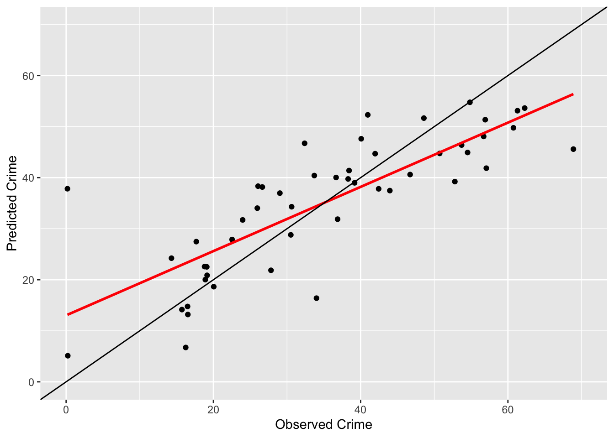

Thursday, November 3, 2022
Today
- Predictive uncertainty with regression trees
- The random forest algorithm
- Cross validation
- Classification trees
Example: Let’s again look at the Palmer penguins data frame. You are interested in using machine learning (regression tree) to predict the body mass of male Gentoo penguins using the penguin’s bill and flipper dimensions.
First you filter the data frame keeping only the male Gentoo penguins.
Gentoo.df <- palmerpenguins::penguins |>
dplyr::filter(species == "Gentoo",
sex == "male")To train (fit) the model you use the tree() function from the {tree} package. The response variable is body_mass_g and the explanatory variables are bill_length_mm, bill_depth_mm, and flipper_length_mm.
The first argument in the function is the model formula and the formula has the same format as that for fitting a linear regression model.
library(tree)
model.tr <- tree(body_mass_g ~
bill_length_mm +
bill_depth_mm +
flipper_length_mm,
data = Gentoo.df)
model.tr## node), split, n, deviance, yval
## * denotes terminal node
##
## 1) root 61 5884000 5485
## 2) bill_length_mm < 47.45 13 795800 5238
## 4) bill_depth_mm < 15.7 8 89690 5131 *
## 5) bill_depth_mm > 15.7 5 467000 5410 *
## 3) bill_length_mm > 47.45 48 4086000 5552
## 6) flipper_length_mm < 228.5 38 3300000 5498
## 12) flipper_length_mm < 216.5 9 942500 5375 *
## 13) flipper_length_mm > 216.5 29 2179000 5536
## 26) flipper_length_mm < 224.5 20 1554000 5595
## 52) bill_length_mm < 49 5 458000 5430 *
## 53) bill_length_mm > 49 15 915000 5650
## 106) bill_length_mm < 50.45 9 553900 5711 *
## 107) bill_length_mm > 50.45 6 277100 5558 *
## 27) flipper_length_mm > 224.5 9 402200 5406 *
## 7) flipper_length_mm > 228.5 10 262200 5755 *A tree diagram helps you interpret this output. Use the plot() method and add text with the text() function.
model.tr |>
plot()
model.tr |>
text()
The most important variable in explaining body mass of the male Gentoo penguins is bill length. It is the variable named on the top of the tree diagram. For penguins with bills less than 47.45 mm, the next most important variable is bill depth (if the condition is true, then branch to the left). For those penguins with shorter bills if bill depth is less than 15.7 mm then the average body mass is 5131 grams and if the bill depth is greater or equal to 15.7 mm then the average body mass is larger at 5410 g. Again, if the condition is true, then branch left.
For male Gentoo penguins with a bills at least 47.45 mm in length, the next most important variable is flipper length. For these larger-billed penguins, if flippers are longer (at least 228.5 mm) then the average body mass is 5755 g. For these larger-bill length penguins, if flippers are shorter than 228.5 mm, then split on flipper length again.
As you move down the tree the branches get smaller (the vertical lines get shorter) indicating the splits are less important in reducing the residual sum of squares (RSS).
Interpreting a tree regression is easier than interpreting a linear regression because the splits have the same units as the explanatory variables. In a linear regression the coefficient has units of response variable divided by the units of the explanatory variable.
Machine learning algorithms are often used solely for predictions. Given the branching structure of the tree, the predicted values are easy to anticipate.
Prediction amounts to following the rules defined by the final model. You start with the value of the variable bill_length_mm and work your way down until you come to a terminal node (a branch that ends in a value rather than a split). The value is the average of the response variable conditional on the splits.
For example, if bill_length_mm is less than 47.45 mm and bill_depth_mm is less than 15.7 mm, then the mass of the penguin is predicted to be 5131 grams. Said another way, 5131 is the average body mass for all male Gentoo penguins with bill length less than 47.45 and bill depth less than 15.7.
You can check this as follows.
Gentoo.df |>
dplyr::filter(bill_length_mm < 47.45 &
bill_depth_mm < 15.7) |>
dplyr::summarize(mean(body_mass_g))## # A tibble: 1 × 1
## `mean(body_mass_g)`
## <dbl>
## 1 5131.The predict() method is used to make predictions with the model. The first argument is the model object and the next is the data frame containing the variables.
model.tr |>
predict(newdata = data.frame(bill_length_mm = 45,
bill_depth_mm = 15,
flipper_length_mm = 220))## 1
## 5131.25model.tr |>
predict(newdata = data.frame(bill_length_mm = 45,
bill_depth_mm = 16,
flipper_length_mm = 220))## 1
## 5410Note that you need to specify values for all the explanatory variables.
The uncertainty on the predicted value is more difficult to work out. You can use the standard error on the mean for that terminal node, but this error ignores the uncertainty surrounding what variable to split and at what value to make the split. Because of this limitation machine learning algorithms are not usually used for inference.
Another question that arises is can the tree be simplified? The question is answered by considering the trade-off between minimizing the bias and maximizing the variance explained in the response variable.
If the tree has many explanatory variables and lots of decision splits then it will explain more variance. But this will make the tree biased toward the particular data set used in the training and predictions made with the model on new data (data not used in the training) will be poor. On the other hand, if the tree is too simple (few variables and few splits), it will not explain much of the variance in the response.
Pruning the tree solves for this trade-off. The prune.tree() function gives a sequence of smaller trees from the largest tree by removing the least important splits.
The function returns the tree size (number of terminal nodes), the total deviance for each tree, and the increase in deviance by going from a larger tree to a smaller tree.
model.tr |>
prune.tree()## $size
## [1] 8 7 6 4 3 2 1
##
## $dev
## [1] 3452632 3536660 3718160 4119414 4358496 4881277 5884098
##
## $k
## [1] -Inf 84027.78 181500.00 200627.38 239081.73 522780.84 1002821.32
##
## $method
## [1] "deviance"
##
## attr(,"class")
## [1] "prune" "tree.sequence"From the output you see the largest tree (8 terminal nodes) results in the smallest deviance ($dev) (3452632). By pruning one branch the deviance increases (3536660) but only by a relatively small amount (84028 which is an increase of about 2.4%). Similarly by pruning a second branch the deviance increases, this time a bit more.
Suppose you want a tree with six terminal nodes. You specify this with the best = 6 argument in the prune.tree() function.
model2.tr <- model.tr |>
prune.tree(best = 6)
model2.tr |>
plot()
model2.tr |>
text()
Predictive uncertainty with regression trees
Let’s look at another example. Predicting Atlantic hurricanes using a regression tree.
Import the annual hurricane data and filter on years since 1950. Create a data frame containing only the basin-wide hurricane counts and Southern Oscillation Index (El Nino) and SST as the two explanatory variables. The SOI has units of standard deviation and the SST has units of degrees C.
df <- readr::read_table("http://myweb.fsu.edu/jelsner/temp/data/AnnualData.txt") |>
dplyr::filter(Year >= 1950) |>
dplyr::select(Year = Year, H = B.1, SOI = soi, SST = sst)##
## ── Column specification ────────────────────────────────────────────────────────
## cols(
## .default = col_double(),
## RowID = col_character()
## )
## ℹ Use `spec()` for the full column specifications.head(df)## # A tibble: 6 × 4
## Year H SOI SST
## <dbl> <dbl> <dbl> <dbl>
## 1 1950 11 3.43 -0.000737
## 2 1951 8 -3.47 0.293
## 3 1952 6 -0.567 0.399
## 4 1953 6 -3.6 0.257
## 5 1954 8 1.07 0.0113
## 6 1955 9 4.23 0.252Then fit a regression tree to these data with the annual count of hurricanes as the response variable and SOI and SST as the explanatory variables.
model.tr <- tree(H ~
SOI +
SST,
data = df)
model.tr |>
plot()
model.tr |>
text()
The predicted number of hurricanes when SOI is -2 s.d. and when SST is .2C is found using the predict() method.
model.tr |>
predict(newdata = data.frame(SOI = -2,
SST = .2))## 1
## 7.347826So, on average, you can expect between 7 and 8 hurricanes in the Atlantic in years with the SOI is -2 s.d. and the SST is .2C above normal.
The predicted value depends on the tree, which in turn depends exactly on what values of SOI and SST are used to train it.
To see this, you train a new tree for hurricane count, but this time leaving out the values of SOI and SST from the last year in the data frame.
Since there are 61 years, leaving the last year out amounts to sub-setting the data frame as df[-61, ].
Then you fit a new tree model (model2) and make a prediction for the same values of SOI and SST (SOI = -2 s.d. and SST = .2C).
model2.tr <- tree(H ~
SOI +
SST,
data = df[-61, ])
model2.tr |>
predict(newdata = data.frame(SOI = -2,
SST = .2))## 1
## 5.714286The predicted value is quite different even though you left out only one year of data when training this tree!
Predictive uncertainty occurs with any model, but the level of uncertainty is much larger with machine learning algorithms because they have many parameters. Each branch in a regression tree is a parameter and so is every split so with our two explanatory variables there are at least 10 parameters.
For example, compare the predicted hurricane rates from a linear regression model with and without the last year.
predict(lm(H ~ SOI + SST, data = df),
newdata = data.frame(SOI = -2, SST = .2))## 1
## 6.230173predict(lm(H ~ SOI + SST, data = df[-61, ]),
newdata = data.frame(SOI = -2, SST = .2))## 1
## 6.219233The difference in predicted values is very small with a linear regression model. On the order of .2% 0.1605136 compared with 22% ((7.35 - 5.71)/7.35 * 100) for the machine learning algorithm
The random forest algorithm
A random forest algorithm solves some of the problem of large predictive uncertainty by fitting many regression trees (a ‘forest’). The algorithm takes many samples (e.g., 100) from the set of all observations and then using these samples fits many regression trees. Given a set of new values for the explanatory variables, each regression tree provides a predicted value. The average over all predicted values is taken as the random forest prediction.
The randomForest() function in the {randomForest} package provides a random forest algorithm.
For comparison here you apply a random forest algorithm to the hurricane data frame. I use the word algorithm because there is no single model. The number of trees is set at 500 (by default).
rfa <- randomForest::randomForest(H ~ SOI + SST,
data = df,
ntree = 500)Then to make a prediction you use (again) the predict() method.
predict(rfa,
newdata = data.frame(SOI = -2, SST = .2))## 1
## 4.672867The predicted value is less sensitive to removing single observations. To see this you apply the random forest algorithm with the last observation removed.
rfa <- randomForest::randomForest(H ~ SOI + SST,
data = df[-61, ],
ntree = 500)
predict(rfa,
newdata = data.frame(SOI = -2, SST = .2))## 1
## 4.726267In summary: Regression trees tend to produce predicted values that are unstable, which means a small change in the data used to grow the tree results in a large difference in the predicted value.
The in-sample error (the error made when using the model to predict the data that you used to fit the model) might be small, but the out-of-sample error (the error made when using the model to predict new data) can be large.
A random forest algorithm solves some of the problem (but not all) of unstable predictions by growing many trees.
Cross validation
Why use a machine learning algorithm? They are useful when you have a large amount of data. They can find features in the data that are not accessible with linear regression.
But how do you compare the predictive skill of a random forest algorithm against the predictive skill of another model?
You use a method called cross validation. Cross validation helps you decide what model to use across the span of many models.
Key idea: Cross validation is a method that removes noise specific to each observation and estimates how well the model/algorithm finds useful prediction rules when this coincident information is unavailable.
For example, here you compare the skill of a random forest algorithm against the skill of a Poisson regression model for predicting hurricane counts. You arrange the cross validation as follows.
n <- length(df$H)
rfx <- numeric(n)
prx <- numeric(n)
for(i in 1:n){
rfa <- randomForest::randomForest(H ~ SOI + SST,
data = df[-i, ])
prm <- glm(H ~ SOI + SST, data = df[-i, ],
family = "poisson")
new <- df[i, ]
rfx[i] <- predict(rfa, newdata = new)
prx[i] <- predict(prm, newdata = new,
type = "response")
}You compute the out-of-sample averaged prediction error squared (mean squared prediction error) for both models.
mean((df$H - prx)^2)## [1] 5.070468mean((df$H - rfx)^2)## [1] 5.261964The Poisson regression model performs slightly better than the random forest model in this case although the difference is not large.
Correlations between the actual and predicted value are
cor(df$H, prx)## [1] 0.5385559cor(df$H, rfx)## [1] 0.5135856The influence each of the two explanatory variables has on the hurricane counts is seen by plotting the predictions on a grid.
newdat <- expand.grid(SST = seq(-.5, .7, .01),
SOI = seq(-5, 4, .1))
z1 <- predict(rfa, newdata = newdat)
prm <- glm(H ~ SOI + SST, data = df, family = "poisson")
z2 <- predict(prm, newdata = newdat, type = "response")
newdat$Hrf <- z1
newdat$Hpr <- z2
library(ggplot2)
p1 <- ggplot(newdat, aes(x = SST, y = SOI, fill = Hrf)) +
geom_tile() +
scale_fill_viridis_c(limits = c(0, 12)) +
labs(fill = "Rate") +
xlab("Atlantic Sea Surface Temperature (°C)") +
ylab("Southern Oscillation Index (s.d.)") +
ggtitle(subtitle = "Random forest algorithm",
label = "Annual Atlantic hurricane rate") +
theme_minimal()
p2 <- ggplot(newdat, aes(x = SST, y = SOI, fill = Hpr)) +
geom_tile() +
scale_fill_viridis_c(limits = c(0, 12)) +
labs(fill = "Rate") +
xlab("Atlantic Sea Surface Temperature (°C)") + ylab("Southern Oscillation Index (s.d.)") +
ggtitle(subtitle = "Poisson regression model",
label = "Annual Atlantic hurricane rate") +
theme_minimal()
library(patchwork)
p1 + p2
Hurricane counts increase with SST and SOI but for high values of SOI the influence of SST is stronger. For high values of SST the influence of the SOI is more pronounced. The random forest algorithm is able to capture more subtle features (plaid pattern) but at the expense of interpreting some noise as signal as seen by the relative high count with SOI values near -3 s.d. and SST values near -.1 C.
Classification trees
When the response variable is categorical (e.g., species) a regression tree is called a classification tree. The classification tree is a set of if-then rules that results in a probability for each category.
If instability is high and wind shear is strong, then predict a high chance of damaging tornadoes. If a patient’s resting heart rate exceeds 120 bpm, then predict a high chance that the patient will suffer a heart attack within the next 5 years.
Returning again the penguins data frame from the {palmerpenguins} package.
head(palmerpenguins::penguins)## # A tibble: 6 × 8
## species island bill_length_mm bill_depth_mm flipper_l…¹ body_…² sex year
## <fct> <fct> <dbl> <dbl> <int> <int> <fct> <int>
## 1 Adelie Torgersen 39.1 18.7 181 3750 male 2007
## 2 Adelie Torgersen 39.5 17.4 186 3800 fema… 2007
## 3 Adelie Torgersen 40.3 18 195 3250 fema… 2007
## 4 Adelie Torgersen NA NA NA NA <NA> 2007
## 5 Adelie Torgersen 36.7 19.3 193 3450 fema… 2007
## 6 Adelie Torgersen 39.3 20.6 190 3650 male 2007
## # … with abbreviated variable names ¹flipper_length_mm, ²body_mass_gWith species as the categorical response variable (there are three different penguin species) and the other columns as explanatory variables you can specify the model formula as species ~ .. The period after the tilde (~) indicating all other variables in the data frame.
model <- tree(species ~ .,
data = palmerpenguins::penguins)
plot(model)
text(model)
From the plot you see that flipper length split at 206.5 mm is the most important variable in distinguishing the species. The next two branches are bill length split at 43.45 mm and island.
Since island is a categorical explanatory variable there is a :a next to the name island. This indicates that the spit is on the first island in alphabetical order. The island names are
unique(palmerpenguins::penguins$island)## [1] Torgersen Biscoe Dream
## Levels: Biscoe Dream TorgersenBiscoe Island is the first in alphabetical order so the split says that if the island is Biscoe (yes, means branch left) then predict the species is Gentoo and if the island is not Biscoe (either Dream or Torgersen) then predict the species to be Chinstrap.
After these three splits resulting in four branches, the branches become very small (the vertical lines are short) indicating that these additional splits do not reduce the RSS by much at all.
So you prune the tree by setting best = 4. That is, you ask the model to grow a tree with the four most important branches.
model2 <- prune.tree(model,
best = 4)
plot(model2)
text(model2)
You examine the model quantitatively by the misclassification error rate. This is given in the last line of the output from the summary() method.
summary(model2)##
## Classification tree:
## snip.tree(tree = model, nodes = 4:5)
## Variables actually used in tree construction:
## [1] "flipper_length_mm" "bill_length_mm" "island"
## Number of terminal nodes: 4
## Residual mean deviance: 0.2791 = 91.81 / 329
## Misclassification error rate: 0.03604 = 12 / 333You see that the model misclassifies the species in 12 of the 333 penguins resulting in a misclassification error rate of 3.6%.
Note that the full model has a misclassification error rate of only 1.8% (6 out of the 333 penguins). But this requires twice as many nodes so the model has greater bias.
Suppose you are able to observe a penguin on Biscoe Island with a flipper length of 200 mm, a bill length of 44 mm, a bill depth 18 mm, and a body mass of 4000 g. What is the likely species?
You use the predict() method with the newdata = argument specified as a data frame. You must include by name all the variables in the model specification. This includes island and sex as factors along with year, flipper_length_mm, bill_length_mm, bill_depth_mm, and body_mass_g as integers or numeric values. Note that since the final tree only includes the variables island, flipper_length_mm, and bill_length_mm it does not matter what values you use for the other variables.
predict(model2,
newdata = data.frame(island = factor("Biscoe"),
sex = factor("male"),
year = 2020,
flipper_length_mm = 200,
bill_length_mm = 44,
bill_depth_mm = 18,
body_mass_g = 4000))## Adelie Chinstrap Gentoo
## 1 0.06349206 0.9206349 0.01587302The result says that there is a 92% chance that it is a Chinstrap penguin, a 6% chance that it is an Adelie penguin and a 2% chance that it is a Gentoo penguin.
The ctree() function in {party} package can be used to model binary, nominal, ordinal and numeric variables.
The {rpart} packages contains additional functions for modeling our data with decision trees. See also: http://rstatistics.net/decision-trees-with-r/
Summary: It is relative easy to fit (train) statistical and machine learning models in R. We saw how to train a random forest model. Predictive uncertainty is harder to work out especially for more complex models. Cross validation provides one way to do this. It removes noise specific to each observation and estimates how well the model finds useful prediction rules when this coincident information is unavailable.
Next time: logistic regression and cluster analysis